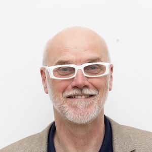
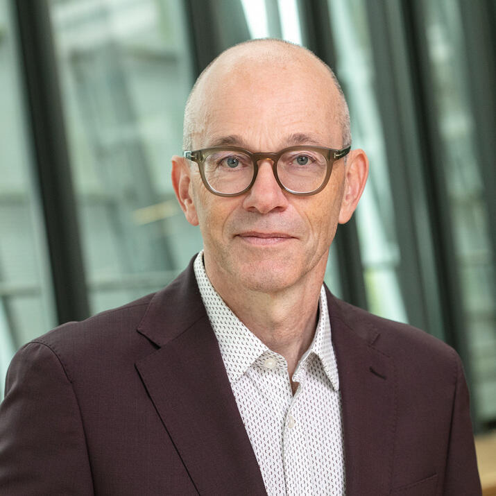

ICTAC 2026
(School&Colloquium) November 9-13, 2026
Bariloche
Bariloche
The ICTAC Postgraduate School on Formal Methods for Building Mission-Critical Systems will be held at the NH Bariloche Edelweiss Hotel, Argentina, on November 9–10, 2026 . It targets master’s and Ph.D. students, early-stage researchers, and lecturers in computer science and mathematics. The school offers specialized training in formal methodologies for developing critical software, particularly for the satellite, aerospace, automotive, and nuclear sectors. The program consists of tutorials (two 2-hour lectures) and short talks (1 hour) by leading experts in the area.
The school will grant scholarships to PhD students, young researchers, and advanced undergraduate students.
Instructions to apply for scholarships: Register your intention to attend at this registration link, where you will need to submit your CV and a motivation letter. Those who fill out the intention to attend will be contacted by the organizers to proceed with the scholarship application.

University of Twente
Mariëlle Stoelinga is Professor of Risk Management for high-tech systems at the Faculty of Electrical Engineering, Mathematics and Computer Science (EEMCS) at the University of Twente. In addition, she has a part-time position at the Software Science department of Radboud University Nijmegen. She is also programme manager for the executive master’s programme Risk Management, in which professionals are trained to be professional risk managers.
Predictive maintenance through the lens of complexity science.
First, I will provide a concise introduction to the principles and applications of risk management in engineering and industrial contexts. It outlines key concepts such as hazard identification, risk assessment, and decision-making under uncertainty. A central focus is Fault Tree Analysis (FTA), a systematic, top-down method for analyzing the causes of system failures. Second, I will talk about predictive maintenance is an innovative technique that provides efficient solutions in reliability engineering: By predicting failures (either by AI & data, or physical models or their combination) , inefficient maintenance can prevent these failures before they occur. While predictive maintenance is successful for components, scaling up to system-level is a major challenge. Here is where complexity science comes in, i.e. the study of complex systems (e.g. cities, companies, the human brain) across fields, like biology, urban planning, physics, and economics. In this field, agent-based models play a prominent role: large simulation models to understand how component behavior leads to system level properties.

University of Buenos Aires - CONICET
Sebastian Uchitel is a Professor at Universidad de Buenos Aires, Principal Investigator at CONICET-Argentina, holds a Readership at Imperial College London. and is an affiliated researcher at Universidad de San Andrés, Argentina. His research interests are in behaviour modelling, analysis and synthesis applied to requirements engineering, software architecture and design, and in particular the use of synthesis at runtime to support system adaptation. He was Editor-in-Chief of the IEEE Transactions on Software Engineering and has served in editorial boards for CACM, REJ, and SCP.. He was program co-chair of ASE’06 and ICSE’10, and General Chair of ICSE’17. He has served on the board of directors of the Argentine national oil company, YPF, and held advisory roles to the Argentine government. He is a member of the Argentine National Academy of Exact, Physical and Natural Sciences.
Discrete Event Control for System Adaptation
Automated construction of correct operational strategies to control a reactive (and possibly distributed) system in such a way that certain system-goals are guaranteed has been studied for several decades. In this course I will introduce one approach to controller synthesis, discrete event control and discuss its differences with some of related approaches such as reactive synthesis and AI planning. I will then cover some of the additional difficulties (and challenges) that arise when these controllers are actually deployed in cyber-physical systems, including guaranteeing end-to-end correctness, hybrid enactment architectures, and dynamic revision and deployment of controllers.

IMDEA Software Institute
César Sánchez is a Full Professor at the IMDEA Software Institute in Madrid, Spain. He holds a Ph.D. in Computer Science from Stanford University (2007), where he worked under the supervision of Zohar Manna, and an M.S. in Computer Science also from Stanford (2001). He received his M.Eng. in Telecommunication Engineering from Universidad Politécnica de Madrid (1998). After a postdoctoral position at UC Santa Cruz, he joined IMDEA Software in 2008, where he was granted tenure in 2012 and promoted to Full Professor in 2023. His research lies at the intersection of logic, automata theory, and game theory, with applications to the rigorous design, verification, and synthesis of software systems. His current research agenda focuses on reactive synthesis modulo theories, logics for hyperproperties, runtime verification, and formal methods for neurosymbolic computing. He is the author of over 130 publications at leading venues including CAV, AAAI, ATVA, TACAS, and LICS, and serves regularly on the program committees of major formal methods conferences.
Reactive Synthesis Modulo Theories
Reactive synthesis is the automated construction of correct-by-design controllers from high-level temporal specifications. Classical approaches based on Linear Temporal Logic (LTL) operate over Boolean signals, leaving data and arithmetic outside the scope of the specification language. This course presents a principled extension of reactive synthesis to LTL modulo theories (LTL_T), a framework that enriches LTL with literals from first-order theories—enabling specifications that relate data values across time. The course begins with a self-contained introduction to LTL syntax and semantics, automata-theoretic techniques, and Satisfiability Modulo Theories (SMT), then introduces LTL_T as a natural unification of these formalisms. We then revisit classical reactive synthesis for LTL, covering two-player games and the automata-to-game pipeline, before developing the analogous theory for LTL_T: realizability modulo theories and controller synthesis via dynamic and static (functional synthesis) approaches. The fourth lecture addresses full LTL modulo theories, including CEGAR-based methods that achieve completeness. The course closes with an excursion into neurosymbolic shielding—a technique that wraps neural network policies with formally verified safety guarantees derived from synthesis—connecting classical formal methods with modern machine learning. Attendees will gain both the theoretical foundations and algorithmic tools needed to specify, analyze, and synthesize reactive systems that manipulate data, bridging the gap between symbolic formal methods and (neural) data-aware computation.

Saarland University
Holger Hermanns is Professor of Computer Science at Saarland University in Germany, heading the Dependable Systems and Software group, and he is Scientific Director of Schloss Dagstuhl - LZI. The European Research Council has awarded him the ERC Advanced Grant POWVER and the ERC Proof-of-Concept Grant LEOpowver. He is member of Academia Europaea, and co-spokesperson of the Center for Perspicuous Computing, SFB TRR 248. From April 2004 to March 2006, Holger Hermanns has served as Dean of Studies of the Faculty of Mathematics and Computer Science, and has served as its Dean from April 2010 to March 2012.
Formal Methods in the Management of LEO Satellite Systems -- From Micro- to Mega-Constellations
The rapid evolution of low-earth orbit (LEO) satellite systems -- from small-scale missions to emerging mega-constellations and orbital data centers -- introduces fundamentally new challenges in resource management. One of the core problems is the need for power-aware scheduling, where limited onboard energy must be orchestrated under dynamic orbital conditions, intermittent resource availability, and time-varying communication opportunities. In this talk, we present a unified perspective on power-aware scheduling in LEO, spanning multiple scales -- from micro-level onboard decision-making to macro- and mega-scale constellation coordination. At the algorithmic core, we discuss optimal scheduling techniques grounded in nonlinear battery models and scalable optimization methods, enabling efficient and autonomous operation under strict energy constraints. We further connect these methods to constellation-level challenges, including routing stability, inter-satellite coordination, and workload placement across highly dynamic network topologies. Building on this foundation, we extend the discussion beyond energy to sustainability. We introduce carbon-aware models for orbital computing that capture lifecycle emissions from launch, operation, and re-entry, revealing non-trivial trade-offs between computation, communication, and data aggregation. At the largest scale, we explore the feasibility of orbital data centers for AI workloads and show that physical constraints -- most notably thermal dissipation and infrastructure mass -- fundamentally limit scalability, often overshadowing compute efficiency.

RWTH Aachen University
Joost-Pieter Katoen is full professor at the RWTH Aachen University in the Software Modeling and Verification (MOVES) group and part-time associated to the Formal Methods & Tools group at the University of Twente. His research areas includes formal methods, computer-aided verification—in particular model checking—, concurrency theory, probabilistic computation, and semantics. Joost-Pieter Katoen is ACM Fellow and holder of an ERC Advanced Research Grant.
Facing Uncertainty in Mission-Critical AI: From Verification to Synthesis
Uncertainties occur in different forms: data may be noisy, mechanisms may be inherently randomised, the visibility (of e.g. a robot) may not be optimal, and the environment in which a system needs to operate may behave in an unknown manner. The central question that we will address is "Can we guarantee that mission=critical AI systems are safe and dependable in the presence of such uncertainty?''. We advocate using model-based, formal verification and synthesis with a particular focus on automation. We will present techniques to verify uncertainty aspects modeled as randomness, non-determinism and/or partial observability, and combinations thereof and showh how to use formal synthesis to turn partial designs into complete models. Several example AI systems will illustrate the capabilities of these approaches.
• More talks and schedule details to be confirmed soon.